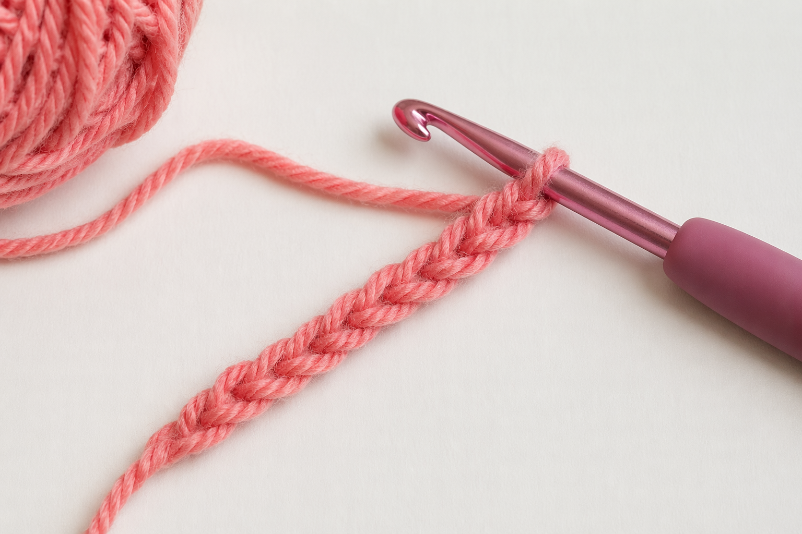

Chain Stitch
The chain stitch is usually the first crochet stitch beginners learn. It creates a foundation for many crochet projects and is used to begin rows, rounds, and starting chains. Once you understand how to make a chain, you can start building other stitches on top of it.
Why the Chain Stitch Matters
The chain stitch is important because it is the base for many crochet patterns. A good chain should be even, not too tight, and not too loose. Practicing this stitch helps beginners get comfortable holding the hook, controlling yarn tension, and making smooth, consistent loops.

Watch the Tutorial
This video teaches how to make a slip knot before beginning the chain stitch. Learning the slip knot first is important because it creates the starting loop that goes on the hook before you can crochet a chain.
Steps for Making a Chain Stitch
- Make a slip knot and place it on your crochet hook.
- Hold the hook and yarn comfortably.
- Wrap the yarn over the hook from back to front.
- Pull the yarn through the loop already on the hook.
- Repeat until you reach the number of chains needed.
Beginner Tips
- Try not to pull the yarn too tightly.
- Keep each chain close to the same size.
- Practice slowly until the motion feels natural.
- Count your chains often so you do not lose track.